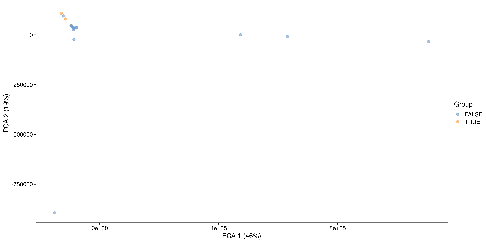
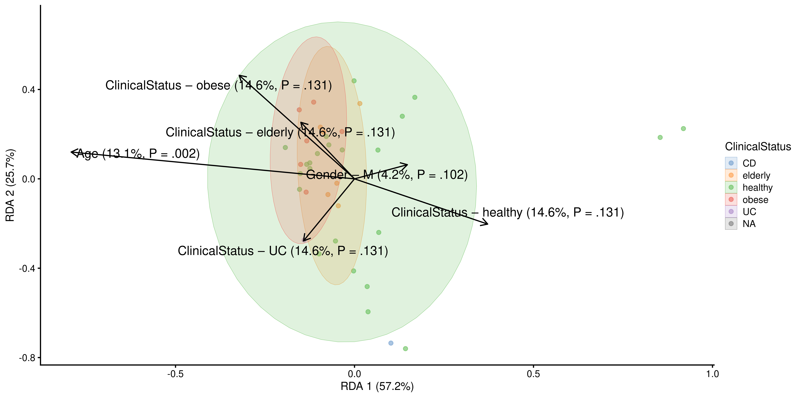

# Load mia and import sample dataset
library(mia)
data("GlobalPatterns", package = "mia")
tse <- GlobalPatterns
# Beta diversity metrics like Bray-Curtis are often applied to relabundances
tse <- transformAssay(tse,
assay.type = "counts",
method = "relabundance")
# Other metrics like Aitchison to clr-transformed data
tse <- transformAssay(tse,
assay.type = "relabundance",
method = "clr",
pseudocount = TRUE)
# Add group information Feces yes/no
tse$Group <- tse$SampleType == "Feces"9 Community Similarity
Beta diversity quantifies the dissimilarity between communities (multiple samples), as opposed to alpha diversity which focuses on variation within a community (one sample). In microbiome research, commonly used metrics of beta diversity include the Bray-Curtis index (for compositional data), Jaccard index (for presence/absence data, ignoring abundance information), Aitchison distance (Euclidean distance for clr transformed abundances, aiming to avoid the compositionality bias), and the Unifrac distance (that takes into account the phylogenetic tree information). Notably, only some of these measures are actual distances, as this is a mathematical concept whose definition is not satisfied by certain ecological measure, such as the Bray-Curtis index. Therefore, the terms dissimilarity and beta diversity are preferred.
| Method description | Assay type | Beta diversity metric |
|---|---|---|
| Quantitative profiling | Absolute counts | Bray-Curtis |
| Relative profiling | Relative abundances | Bray-Curtis |
| Aitchison distance | Absolute counts | Aitchison |
| Aitchison distance | clr | Euclidean |
| Robust Aitchison distance | rclr | Euclidean |
| Presence/Absence similarity | Relative abundances | Jaccard |
| Presence/Absence similarity | Absolute counts | Jaccard |
| Phylogenetic distance | Rarefied counts | Unifrac |
In practice, beta diversity is usually represented as a dist object, a triangular matrix where the distance between each pair of samples is encoded by a specific cell. This distance matrix can then undergo ordination, which is an important ecological tool to reduce the dimensionality of data for a more efficient analysis and visualization. Ordination techniques aim to capture as much essential information from the data as possible and turn it into a lower dimensional representation. Dimension reduction is bound to lose information but commonly used ordination techniques can preserve relevant information of sample similarities in an optimal way, which is defined in different ways by different methods.
Based on the type of algorithm, ordination methods in microbiome research can be generally divided in two categories: unsupervised and supervised ordination. The former includes Principal Coordinate Analysis (PCoA), Principal Component Analysis (PCA) and Uniform Manifold Approximation and Projection for Dimension Reduction (UMAP), whereas the latter is mainly represented by distance-based Redundancy Analysis (dbRDA). We will first discuss unsupervised ordination methods and then proceed to supervised ones.
9.1 Unsupervised ordination
Unsupervised ordination methods variation in the data without additional information on covariates or other supervision of the model. Among the different approaches, Multi-Dimensional Scaling (MDS) and non-metric MDS (NMDS) can be regarded as the standard. They are jointly referred to as PCoA. For this demonstration we will analyse beta diversity in GlobalPatterns, and observe the variation between stool samples and those with a different origin.
9.1.1 Comparing communities by beta diversity analysis
A typical comparison of community compositions starts with a visual representation of the groups by a 2D ordination. Then we estimate relative abundances and MDS ordination based on Bray-Curtis index between the groups, and visualize the results.
In the following examples dissimilarity is calculated with the function supplied to the FUN argument. Several metrics of beta diversity are defined by the vegdist function of the vegan package, which is often used in this context. However, such custom functions created by the user also work, as long as they return a dist object. In either case, this function is then applied to calculate reduced dimensions via an ordination method, the results of which can be stored in the reducedDim slot of the TreeSE. This entire process is contained by the runMDS and runNMDS functions.
# Load package to plot reducedDim
library(scater)
# Run PCoA on relabundance assay with Bray-Curtis distances
tse <- runMDS(tse,
FUN = vegan::vegdist,
method = "bray",
assay.type = "relabundance",
name = "MDS_bray")Sample dissimilarity can be visualized on a lower-dimensional display (typically 2D) using the plotReducedDim function from the scater package. This also provides tools to incorporate additional information encoded by color, shape, size and other aesthetics. Can you find any difference between the groups?
# Create ggplot object
p <- plotReducedDim(tse, "MDS_bray",
colour_by = "Group")
# Calculate explained variance
e <- attr(reducedDim(tse, "MDS_bray"), "eig")
rel_eig <- e / sum(e[e > 0])
# Add explained variance for each axis
p <- p + labs(x = paste("PCoA 1 (", round(100 * rel_eig[[1]], 1), "%", ")", sep = ""),
y = paste("PCoA 2 (", round(100 * rel_eig[[2]], 1), "%", ")", sep = ""))
pA few combinations of beta diversity metrics and assay types are typically used. For instance, Bray-Curtis dissimilarity and Euclidean distance are often applied to the relative abundance and the clr assays, respectively. Besides beta diversity metric and assay type, the PCoA algorithm is also a variable that should be considered. Below, we show how the choice of these three factors can affect the resulting lower-dimensional data.
# Run NMDS on relabundance assay with Bray-Curtis distances
tse <- runNMDS(tse,
FUN = vegan::vegdist,
method = "bray",
assay.type = "relabundance",
name = "NMDS_bray")
# Run MDS on clr assay with Aitchison distances
tse <- runMDS(tse,
FUN = vegan::vegdist,
method = "euclidean",
assay.type = "clr",
name = "MDS_aitchison")
# Run NMDS on clr assay with Euclidean distances
tse <- runNMDS(tse,
FUN = vegan::vegdist,
method = "euclidean",
assay.type = "clr",
name = "NMDS_aitchison")Multiple ordination plots are combined into a multi-panel plot with the patchwork package, so that different methods can be compared to find similarities between them or select the most suitable one to visualize beta diversity in the light of the research question.
# Load package for multi-panel plotting
library(patchwork)
# Generate plots for all 4 reducedDims
plots <- lapply(c("MDS_bray", "MDS_aitchison",
"NMDS_bray", "NMDS_aitchison"),
plotReducedDim,
object = tse,
colour_by = "Group")
# Generate multi-panel plot
wrap_plots(plots) +
plot_layout(guides = "collect")The Unifrac method is a special case, as it requires data on the relationship of features in form on a phylo tree. calculateUnifrac performs the calculation to return a dist object, which can again be used within runMDS.
tse <- runMDS(tse,
FUN = mia::calculateUnifrac,
name = "Unifrac",
tree = rowTree(tse),
ntop = nrow(tse),
assay.type = "counts")
plotReducedDim(tse, "Unifrac",
colour_by = "Group")9.1.2 Other ordination methods
Other dimension reduction methods, such as PCA and UMAP, are inherited from the scater package.
tse <- runPCA(tse,
name = "PCA",
assay.type = "counts",
ncomponents = 10)
plotReducedDim(tse, "PCA",
colour_by = "Group")
As mentioned before, applicability of the different methods depends on your sample set and research question.
tse <- runUMAP(tse,
name = "UMAP",
assay.type = "counts",
ncomponents = 3)
plotReducedDim(tse, "UMAP",
colour_by = "Group",
ncomponents = c(1:3))9.1.3 Explained variance
The percentage of explained variance is typically shown for PCA ordination plots. This quantifies the proportion of overall variance in the data that is captured by the PCA axes, or how well the ordination axes reflect the original distances.
Sometimes a similar measure is shown for MDS/PCoA. The interpretation is generally different, however, and hence we do not recommend using it. PCA is a special case of PCoA with Euclidean distances. With non-Euclidean dissimilarities PCoA uses a trick where the pointwise dissimilarities are first cast into similarities in a Euclidean space (with some information loss i.e. stress) and then projected to the maximal variance axes. In this case, the maximal variance axes do not directly reflect the correspondence of the projected distances and original distances, as they do for PCA.
In typical use cases, we would like to know how well the ordination reflects the original similarity structures; then the quantity of interest is the so-called “stress” function, which measures the difference in pairwise similarities between the data points in the original (high-dimensional) vs. projected (low-dimensional) space.
Hence, we propose that for PCoA and other ordination methods, users would report relative stress, which varies in the unit interval and is better if smaller. This can be calculated as shown below.
# Load vegan package
library(vegan)
# Quantify dissimilarities in the original feature space
x <- assay(tse, "relabundance") # Pick relabunance assay separately
d0 <- as.matrix(vegdist(t(x), "bray"))
# PCoA Ordination
pcoa <- as.data.frame(cmdscale(d0, k = 2))
names(pcoa) <- c("PCoA1", "PCoA2")
# Quantify dissimilarities in the ordination space
dp <- as.matrix(dist(pcoa))
# Calculate stress i.e. relative difference in the original and
# projected dissimilarities
stress <- sum((dp - d0)^2) / sum(d0^2)A Shepard plot visualizes the original versus the ordinated dissimilarity between the observations.
ord <- order(as.vector(d0))
df <- data.frame(d0 = as.vector(d0)[ord],
dmds = as.vector(dp)[ord])
ggplot(df, aes(x = d0, y = dmds)) +
geom_smooth() +
geom_point() +
labs(title = "Shepard plot",
x = "Original distance",
y = "MDS distance",
subtitle = paste("Stress:", round(stress, 2))) +
theme_bw()9.2 Supervised ordination
dbRDA is a supervised counterpart of PCoA, that is, it takes into account the covariates specified by the user to maximize the variance with respect to the them. The result shows how much each covariate affects beta diversity. The table below illustrates the relation between supervised and unsupervised ordination methods.
| supervised ordination | unsupervised ordination | |
|---|---|---|
| Euclidean distance | RDA | PCA |
| non-Euclidean distance | dbRDA | PCoA/MDS, NMDS and UMAP |
We demonstrate the usage of dbRDA with the enterotype dataset, where samples correspond to patients. The colData contains the clinical status of each patient and a few covariates such as their gender and age.
# Load data
data("enterotype", package = "mia")
tse2 <- enterotype
# Apply relative transform
tse2 <- transformAssay(tse2,
method = "relabundance")dbRDA can be perfomed with the runRDA function. In addition to the arguments previously defined for unsupervised ordination, this function takes a formula to control for variables and an action to treat missing values. Along with clinical status, which is the main outcome, we control for gender and age, and exclude observations where one of these variables is missing.
# Perform RDA
tse2 <- runRDA(tse2,
assay.type = "relabundance",
formula = assay ~ ClinicalStatus + Gender + Age,
distance = "bray",
na.action = na.exclude)
# Store results of PERMANOVA test
rda_info <- attr(reducedDim(tse2, "RDA"), "significance")The importance of each variable on the similarity between samples can be assessed from the results of PERMANOVA, automatically provided by the runRDA function. We see that both clinical status and age explain more than 10% of the variance, but only age shows statistical significance.
rda_info$permanova |>
knitr::kable()| Df | SumOfSqs | F | Pr(>F) | Total variance | Explained variance | |
|---|---|---|---|---|---|---|
| Model | 6 | 1.1157 | 1.940 | 0.045 | 3.991 | 0.2795 |
| ClinicalStatus | 4 | 0.5837 | 1.522 | 0.136 | 3.991 | 0.1463 |
| Gender | 1 | 0.1679 | 1.751 | 0.108 | 3.991 | 0.0421 |
| Age | 1 | 0.5245 | 5.471 | 0.001 | 3.991 | 0.1314 |
| Residual | 30 | 2.8757 | NA | NA | 3.991 | 0.7205 |
To ensure that the homogeneity assumption holds, we retrieve the corresponding information from the results of RDA. In this case, none of the p-values is lower than the significance threshold, and thus homogeneity is observed.
rda_info$homogeneity |>
knitr::kable()| Df | Sum Sq | Mean Sq | F | N.Perm | Pr(>F) | Total variance | Explained variance | |
|---|---|---|---|---|---|---|---|---|
| ClinicalStatus | 4 | 0.2511 | 0.0628 | 2.7440 | 999 | 0.113 | 1.0288 | 0.2440 |
| Gender | 1 | 0.0103 | 0.0103 | 0.4158 | 999 | 0.516 | 0.9283 | 0.0111 |
| Age | 29 | 0.3272 | 0.0113 | 17.0255 | 999 | 0.423 | 0.3319 | 0.9860 |
Next, we proceed to visualize the weight and significance of each variable on the similarity between samples with an RDA plot, which can be generated with the plotRDA function from the miaViz package.
# Load packages for plotting function
library(miaViz)
# Generate RDA plot coloured by clinical status
plotRDA(tse2, "RDA", colour_by = "ClinicalStatus")
From the plot above, we can see that only age significantly describes differences between the microbial profiles of different samples. Such visual approach complements the previous results of PERMANOVA.
9.3 Case studies
9.3.0.1 Visualizing the most dominant genus on PCoA
In this section, we visualize the most dominant genus on PCoA. A similar visualization was proposed by (2021). First, we agglomerate the data at the Genus level and get the dominant taxa per sample.
# Agglomerate to genus level
tse_genus <- mergeFeaturesByRank(tse,
rank = "Genus")
# Convert to relative abundances
tse_genus <- transformAssay(tse,
method = "relabundance",
assay.type = "counts")
# Add info on dominant genus per sample
tse_genus <- addPerSampleDominantFeatures(tse_genus,
assay.type = "relabundance",
name = "dominant_taxa")
# Overview
countDominantFeatures(tse_genus, rank = "Genus", digits = 3, name = "dominant_taxa")# A tibble: 17 × 3
dominant_taxa n rel_freq
<chr> <int> <dbl>
1 Genus:Bacteroides 5 0.192
2 Order:Stramenopiles 4 0.154
3 Family:Desulfobulbaceae 2 0.077
4 Genus:Streptococcus 2 0.077
5 Class:Chloracidobacteria 1 0.038
6 Family:ACK-M1 1 0.038
7 Family:Flavobacteriaceae 1 0.038
8 Family:Moraxellaceae 1 0.038
9 Family:Ruminococcaceae 1 0.038
10 Genus:CandidatusSolibacter 1 0.038
11 Genus:Dolichospermum 1 0.038
12 Genus:Faecalibacterium 1 0.038
13 Genus:MC18 1 0.038
14 Genus:Neisseria 1 0.038
15 Genus:Prochlorococcus 1 0.038
16 Genus:Veillonella 1 0.038
17 Order:Chromatiales 1 0.038Next, we perform PCoA with Bray-Curtis dissimilarity.
tse_genus <- runMDS(tse_genus,
FUN = vegan::vegdist,
name = "PCoA_BC",
assay.type = "relabundance")Finally, we get the top taxa and and visualize their abundances on PCoA. Note that A 3D interactive version of the plot below can be found in @ref(extras).
# Getting the top taxa
top_taxa <- getTopFeatures(tse_genus,
top = 6,
assay.type = "relabundance")
# Naming all the rest of non top-taxa as "Other"
most_abundant <- lapply(colData(tse_genus)$dominant_taxa,
function(x) {if (x %in% top_taxa) {x} else {"Other"}})
# Storing the previous results as a new column within colData
colData(tse_genus)$most_abundant <- as.character(most_abundant)
# Calculating percentage of the most abundant
most_abundant_freq <- table(as.character(most_abundant))
most_abundant_percent <- round(most_abundant_freq / sum(most_abundant_freq) * 100, 1)
# Retrieving the explained variance
e <- attr(reducedDim(tse_genus, "PCoA_BC"), "eig")
var_explained <- e / sum(e[e > 0]) * 100
# Define colors for visualization
my_colors <- c("black", "blue", "lightblue", "darkgray", "magenta", "darkgreen", "red")
# Visualization
plot <-plotReducedDim(tse_genus, "PCoA_BC",
colour_by = "most_abundant") +
scale_colour_manual(values = my_colors,
labels = paste0(names(most_abundant_percent), "(", most_abundant_percent, "%)")) +
labs(x = paste("PC 1 (", round(var_explained[1], 1), "%)"),
y = paste("PC 2 (", round(var_explained[2], 1), "%)"),
color = "")
plotSimilarly, we visualize and compare the sub-population.
# Calculating the frequencies and percentages for both categories
freq_TRUE <- table(as.character(most_abundant[colData(tse_genus)$Group == TRUE]))
freq_FALSE <- table(as.character(most_abundant[colData(tse_genus)$Group == FALSE]))
percent_TRUE <- round(freq_TRUE / sum(freq_TRUE) * 100, 1)
percent_FALSE <- round(freq_FALSE / sum(freq_FALSE) * 100, 1)
# Visualization
plotReducedDim(tse_genus[ , colData(tse_genus)$Group == TRUE], "PCoA_BC",
colour_by = "most_abundant") +
scale_colour_manual(values = my_colors,
labels = paste0(names(percent_TRUE), "(", percent_TRUE, "%)")) +
labs(x = paste("PC 1 (", round(var_explained[1], 1), "%)"),
y = paste("PC 2 (", round(var_explained[2], 1), "%)"),
title = "Group = TRUE", color = "")plotReducedDim(tse_genus[ , colData(tse_genus)$Group == FALSE], "PCoA_BC",
colour_by = "most_abundant") +
scale_colour_manual(values = my_colors,
labels = paste0(names(percent_FALSE), "(", percent_FALSE, "%)")) +
labs(x = paste("PC 1 (", round(var_explained[1], 1), "%)"),
y = paste("PC 2 (", round(var_explained[2], 1), "%)"),
title = "Group = FALSE", color = "")9.3.1 Testing differences in community composition between sample groups
Permutational Analysis of Variance (PERMANOVA; (2001)) is a widely used non-parametric multivariate method that aims to estimate the actual statistical significance of differences in the observed community composition between two groups of samples.
PERMANOVA tests the hypothesis that the centroids and dispersion of the community are equivalent between the compared groups. A p-value smaller than the significance threshold indicates that the groups have a different community composition. This method is implemented with the adonis2 function from the vegan package.
By default, the argument by is set to "terms", in which the order of variables in the formula matters. In this case, each variable is analyzed sequentially, and the result is different when more than 1 variable is introduced and their order differs. Therefore, it is recommended to set by = "margin", which specifies that the marginal effect of each variable is analyzed individually. You can view a comparison between the two designs in chapter @ref(compare-permanova).
We can perform PERMANOVA either with adonis2 function or by first performing dbRDA and then applying permutational test its results. An advantage of the latter approach is that by doing so we can get coefficients: how much each taxa affects the variation between communities.
# Agglomerate data to Species level
tse <- mergeFeaturesByRank(tse,
rank = "Species")
# Set seed for reproducibility
set.seed(1576)
# We choose 99 random permutations. Consider applying more (999 or 9999) in your
# analysis.
permanova <- adonis2(t(assay(tse, "relabundance")) ~ Group,
by = "margin", # each term (here only 'Group') analyzed individually
data = colData(tse),
method = "euclidean",
permutations = 99)
# Set seed for reproducibility
set.seed(1576)
# Perform dbRDA
dbrda <- dbrda(t(assay(tse,"relabundance")) ~ Group,
data = colData(tse))
# Perform permutational analysis
permanova2 <- anova.cca(dbrda,
by = "margin", # each term (here only 'Group') analyzed individually
method = "euclidean",
permutations = 99)
# Get p-values
p_values <- c(permanova["Group", "Pr(>F)"], permanova2["Group", "Pr(>F)"])
p_values <-as.data.frame(p_values)
rownames(p_values) <- c("adonis2", "dbRDA+anova.cca")
p_values p_values
adonis2 0.02
dbRDA+anova.cca 0.02As we can see, the community composition is significantly different between the groups (p < 0.05), and these two methods give equal p-values.
Let us visualize the model coefficients for species that exhibit the largest differences between the groups. This gives some insights into how the groups tend to differ from each other in terms of community composition.
# Add taxa info
sppscores(dbrda) <- t(assay(tse, "relabundance"))
# Get coefficients
coef <- dbrda$CCA$v
# Get the taxa with biggest weights
top.coef <- head(coef[rev(order(abs(coef))), , drop = FALSE], 20)
# Sort weights in increasing order
top.coef <- top.coef[order(top.coef), ]
# Get top names
top_names <- names(top.coef)[order(abs(top.coef), decreasing = TRUE)]df <- data.frame(x = top.coef,
y = factor(names(top.coef), unique(names(top.coef))))
ggplot(df, aes(x = x, y = y)) +
geom_bar(stat = "identity") +
labs(x = "", y= "", title = "Top Taxa") +
theme_bw()In the example above, the largest differences between the two groups can be attributed to Genus:Bacteroides (elevated in the first group) and Family:Ruminococcaceae (elevated in the second group), and many other co-varying species.
9.3.2 Checking the homogeneity condition
It is important to note that the application of PERMANOVA assumes homogeneous group dispersions (variances). This can be tested with the PERMDISP2 method (Anderson 2006) by using the same assay and distance method than in PERMANOVA.
anova(betadisper(vegdist(t(assay(tse, "counts"))), colData(tse)$Group))Analysis of Variance Table
Response: Distances
Df Sum Sq Mean Sq F value Pr(>F)
Groups 1 0.2385 0.2385 103 3.6e-10 ***
Residuals 24 0.0554 0.0023
---
Signif. codes: 0 '***' 0.001 '**' 0.01 '*' 0.05 '.' 0.1 ' ' 1If the groups have similar dispersion, PERMANOVA can be seen as an appropriate choice for comparing community compositions.
9.4 Summary
As a final note, we provide a comprehensive list of functions for the evaluation of dissimilarity indices available in the mia and scater packages. The calculate methods return a reducedDim object as an output, whereas the run methods store the reducedDim object into the specified TreeSE.
- Canonical Correspondence Analysis (CCA):
calculateCCAandrunCCA - dbRDA:
calculateRDAandrunRDA - Double Principal Coordinate Analysis (DPCoA):
calculateDPCoAandrunDPCoA - Jensen-Shannon Divergence (JSD):
calculateJSDandrunJSD - MDS:
calculateMDSandrunMDS - NMDS:
calculateNMDSandrunNMDS - Overlap:
calculateOverlapandrunOverlap - t-distributed Stochastic Neighbor Embedding (t-SNE):
calculateTSNEandrunTSNE - UMAP:
calculateUMAPandrunUMAP
For more information on clustering samples by beta diversity, you can refer to:
- How to extract information from clusters
- Chapter @ref(clustering) on community typing
Anderson, Marti J. 2001. “A New Method for Non-Parametric Multivariate Analysis of Variance.” Austral Ecology 26 (1): 32–46. https://doi.org/10.1111/j.1442-9993.2001.01070.pp.x.
———. 2006. “Distance-Based Tests for Homogeneity of Multivariate Dispersions.” Biometrics 62: 245–53. https://doi.org/10.1111/j.1541-0420.2005.00440.x.
Salosensaari, Aaro, Ville Laitinen, Aki Havulinna, Guillaume Méric, Susan Cheng, Markus Perola, Liisa Valsta, et al. 2021. “Taxonomic Signatures of Cause-Specific Mortality Risk in Human Gut Microbiome.” Nature Communications 12: 1–8. https://www.nature.com/articles/s41467-021-22962-y.